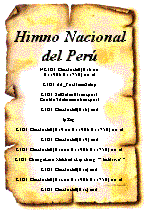
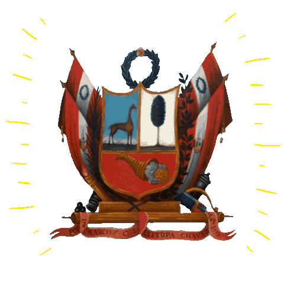

La bandera
El máximo símbolo de nuestra patria. Nuestra bandera tiene tres franjas verticales de colores rojo y blanco. El color rojo, según los historiadores, representa la sangre derramada de miles de héroes y mártires que dieron la vida por defender su patria y su gente. Mientras que el color blanco representa la libertad, justicia y paz en el Perú.
El Himno Nacional
El Himno Nacional es una composición poética y musical que consta de siete estrofas y un coro que remarca gestas libertarias del Perú. Fue entonado por primera vez por Rosa Merino el 23 de setiembre de 1821 y oficializado por decreto el 15 de abril de 1822.

El Escudo Nacional
El máximo símbolo de nuestra patria. Nuestra bandera tiene tres franjas verticales de colores rojo y blanco. El color rojo, según los historiadores, representa la sangre derramada de miles de héroes y mártires que dieron la vida por defender su patria y su gente. Mientras que el color blanco representa la libertad, justicia y paz en el Perú.

Escudo Nacional del Perú